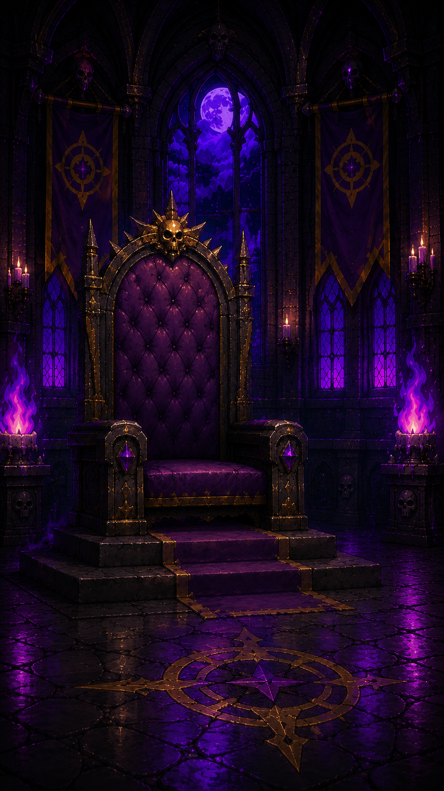
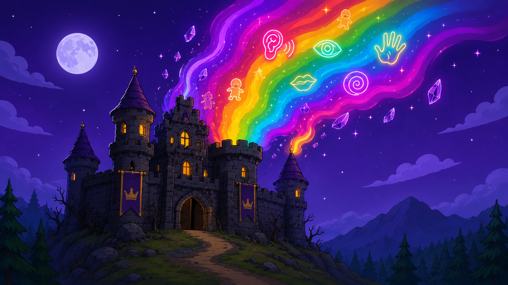
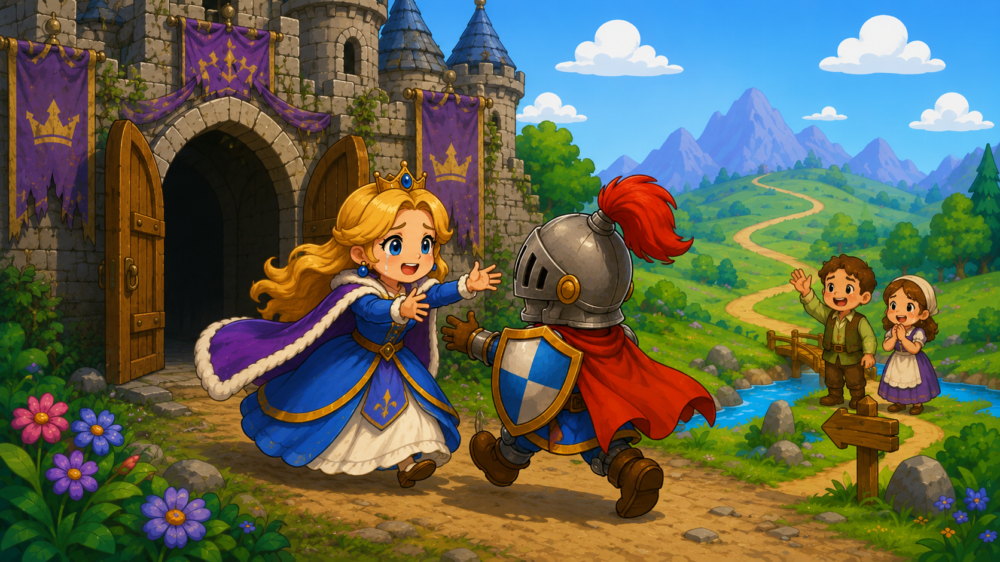
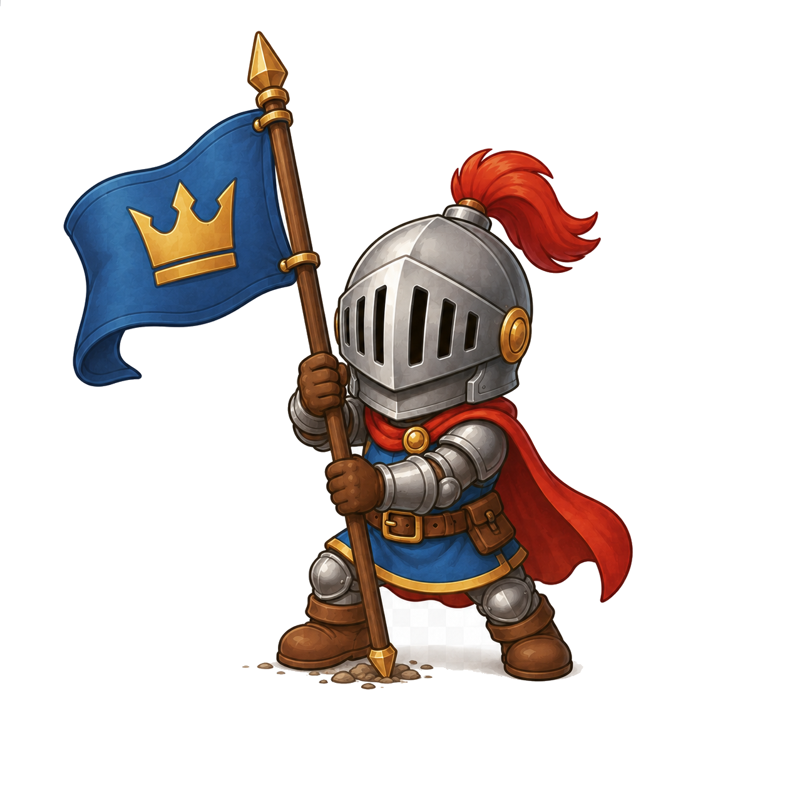
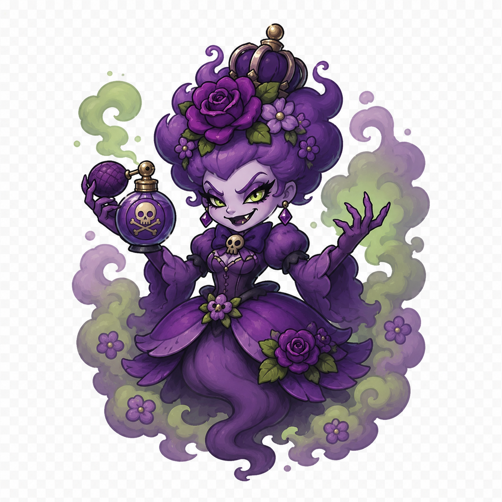
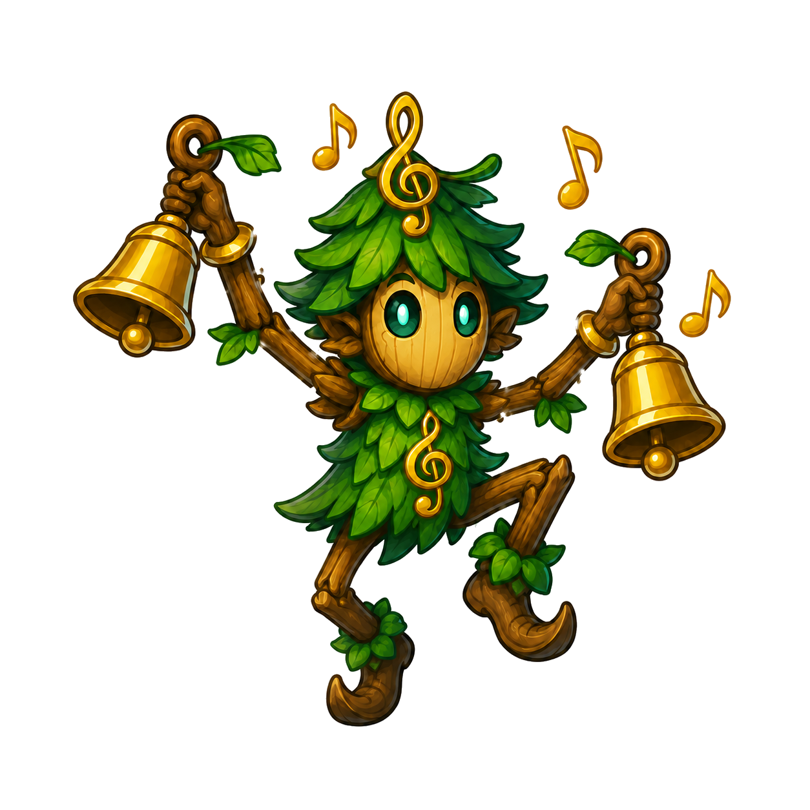
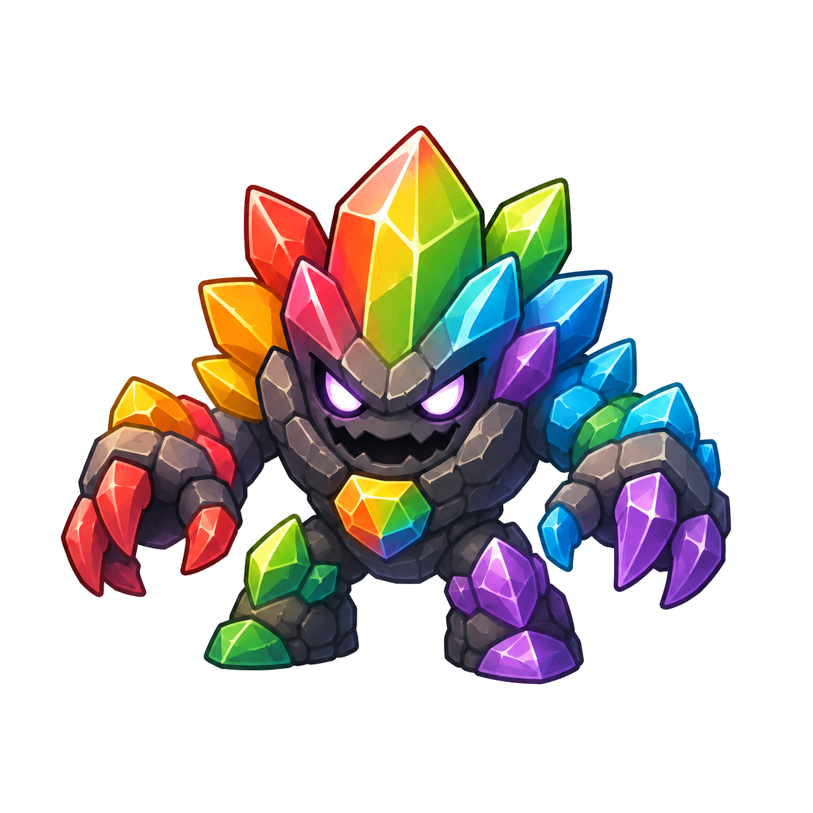
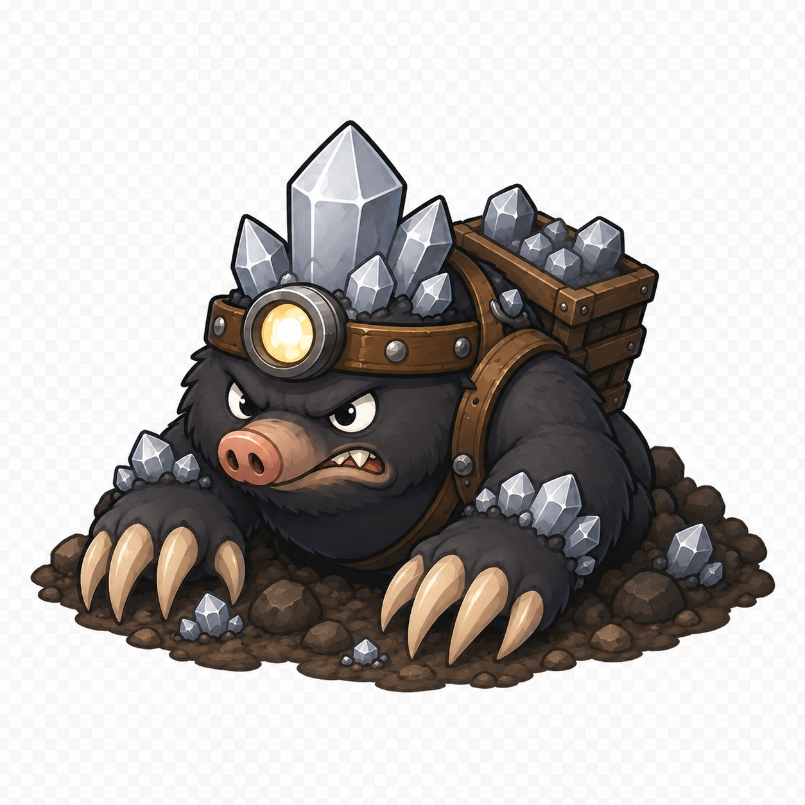
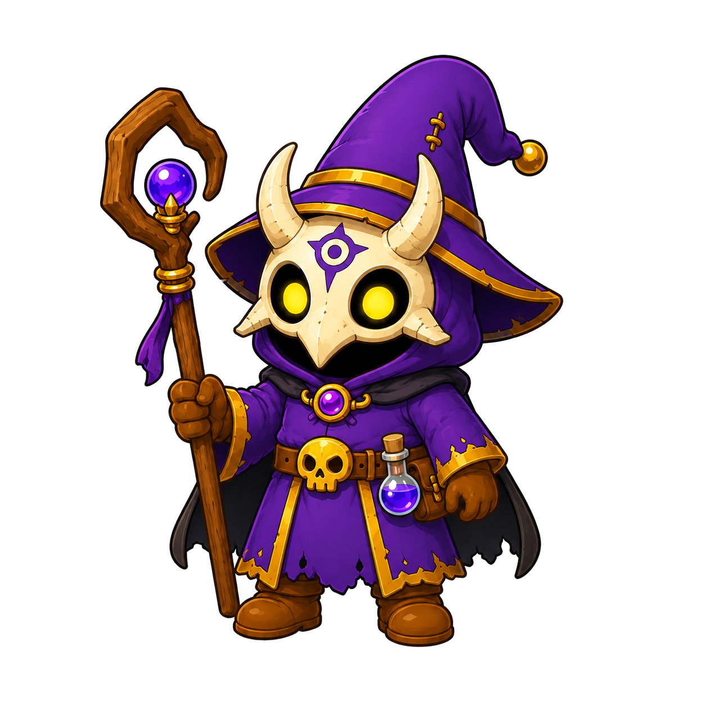

1 / 6

Der Ritter betritt den Thronsaal. Vor ihm ruht die Glaskugel, in der die Magie der Sinne gefangen ist.




Die Reise geht weiter – hier begegnen dir noch einmal alle wichtigen Figuren des Abenteuers.

Sie gab die Hoffnung nie auf und glaubte an den Ritter. Mit Mut, Vertrauen und Dankbarkeit begrüßte sie ihn nach seiner Rückkehr am Schlosstor.

Er stellte sich jeder Prüfung und lernte, wie wichtig unsere Sinne für Orientierung, Gefühle, Genuss und Schutz vor Gefahren sind. Mit Tapferkeit befreite er das Königreich.

Im Duftgarten vernebelte er Gerüche und machte es schwer, Gutes von Schlechtem zu unterscheiden. Erst durch genaues Riechen fand der Ritter den richtigen Weg.

Zwischen Echo und Klang stellte er das Gehör auf die Probe. Der Ritter lernte, wie wichtig Hören ist, um Warnungen, Stimmen und Musik wahrzunehmen.

Er verwirrte mit bunten Täuschungen. Nur mit offenen Augen konnte der Ritter Unterschiede erkennen und wieder Ordnung in die Welt der Farben bringen.

Im Dunkeln der Tastminen zeigte er, wie wichtig der Tastsinn ist. Fühlen hilft uns, Oberflächen zu erkennen und Gefahren wie Hitze oder Schmerz rechtzeitig zu bemerken.
In der Flammenküche stellte er Geschmack und Vorsicht auf die Probe. Der Ritter lernte, dass der Geschmack nicht nur Genuss bringt, sondern auch vor Verdorbenem warnen kann.

Er raubte dem Königreich die Sinnesmagie und sperrte sie in die Glaskugel. Doch am Ende wurde er besiegt und seine dunkle Macht zerbrach.
Behalte deine Sinne im Alltag im Blick: Sie helfen dir beim Lernen, schützen dich vor Gefahren und machen die Welt bunt, lebendig und voller Gefühle.